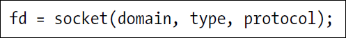

fd Stands for file descriptor which is a pointer to this socket that you are creating.
protocol will always set to zero through this book
3 different types of sockets domains:

AF stands for Address Family
For the second paramter the socket types their are 2 types of socket Stream and Datagram.

Stream sockets(SOCK_STREAM)

Datagram sockets(SOCK_DGRAM)